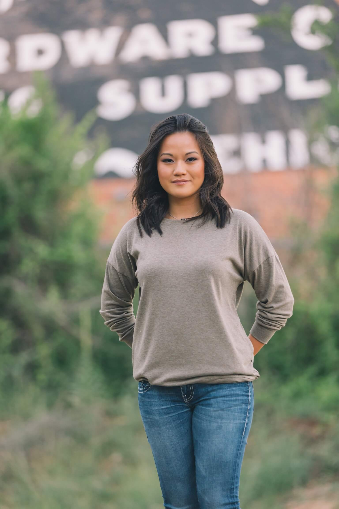

Hello, I'm Zoe Harman

I'm a graphic design student at Yavapai College and plan to transfer to Arizona State University in the Fall 2023 to finish my degree.
A little about me
Thanks for stopping by. When it comes to creating art digitally, I do not have much experience but I'm excited to learn more. Since I like to draw, paint, and color on physical paper, I thought I would try to learn how to do all that stuff digitally since this world is so technology based.
If I am not creating art, I love to spend time with my dog and take him everywhere I go as much as possible. Also, I enjoy spending time with friends and family.